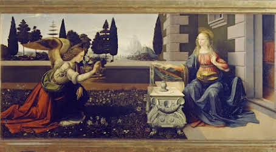
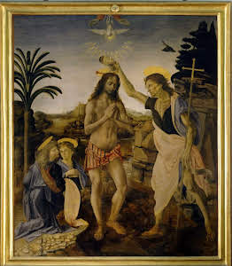
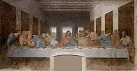

Leonardo da Vinci, cunoscut mai ales pentru calitățile sale de om de știință și inventator, a rămas în istorie ca unul dintre cei mai mari pictori. Chiar dacă numărul lucrărilor sale rămase este limitat, acestea au o valoare inestimabilă și au atins prețuri fabuloase la vânzare. Mai ales datorită tehnicii sale inovatoare, perfecțiunii detaliilor și interesului pentru anatomie, Leonardo a fost descris încă din timpul vieții ca un pictor "divin". Lucrările sale celebre, precum Monna Lisa sau Cina cea de Taină, se remarcă prin iluminare, expresivitate și coloristică inovatoare.
Leonardo da Vinci a realizat prima sa lucrare, Botezul lui Hristos, în colaborare cu Verrocchio. Două alte lucrări din aceeași perioadă sunt Buna Vestire, una mai mică și alta mai mare. Ambele prezintă o compoziție clasică, cu Fecioara în dreapta și un înger în stânga ei. Deși inițial atribuită lui Ghirlandaio, a doua lucrare este acum considerată a fi realizată de Leonardo. În lucrarea mai mică, Fecioara este supusă, în timp ce în cea mai mare, ea acceptă rolul de mamă a Domnului cu încredere, reflectând dimensiunea umană a acesteia. Leonardo da Vinci pune un accent deosebit pe expresiile și gesturile umane din lucrările sale, evidențiind complexitatea personajelor sale.

În 1480, Leonardo da Vinci a primit două comenzi importante, una fiind lucrarea "Sf. Ieronim în pustietate". Această lucrare a fost asociată de cercetători cu o perioadă dificilă din viața artistului, în care el învăța să trăiască sau, mai degrabă, să moară. Compoziția lucrării este extrem de neobișnuită, iar în centrul ei se află Sf. Ieronim, cu un leu aflat în planul din dreapta. În fundal se pot observa stânci colțuroase, iar personajele principale sunt în prim plan. De asemenea, Leonardo a început lucrarea "Adorația Magilor" pentru călugării de la mânăstirea San Donato din Scopeto, dar a abandonat-o în 1482 când a plecat la Milano la cererea lui Lorenzo de Medici.
Leonardo da Vinci este celebru pentru lucrările sale, printre care cel mai cunoscut este portretul Mona Lisa. Acest portret micuț este renumit pentru zâmbetul misterios al femeii, creat cu ajutorul unei tehnici numite "sfumato", care a fost denumită "fumul lui Leonardo". Zâmbetul ei a fost descris ca fiind atât de plăcut încât pare să aibă o origine divină. Unele controverse există în legătură cu descrierea făcută de Vasari, care părea să includă sprâncene la model, iar ulterior acestea au fost eliminate. Analiza recentă a lucrării a arătat că Mona Lisa a fost inițial pictată cu gene și sprâncene, dar apoi acestea au fost eliminate. Pictura se remarcă și prin stilul detaliat și conservarea perfectă, fiind o raritate pentru o lucrare atât de veche.